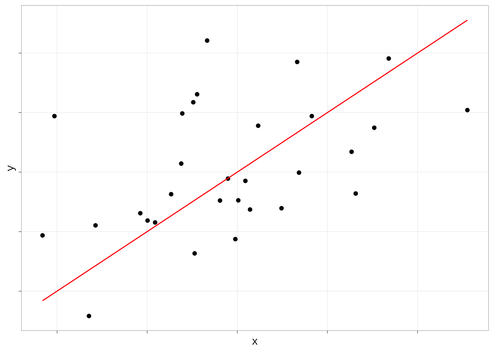
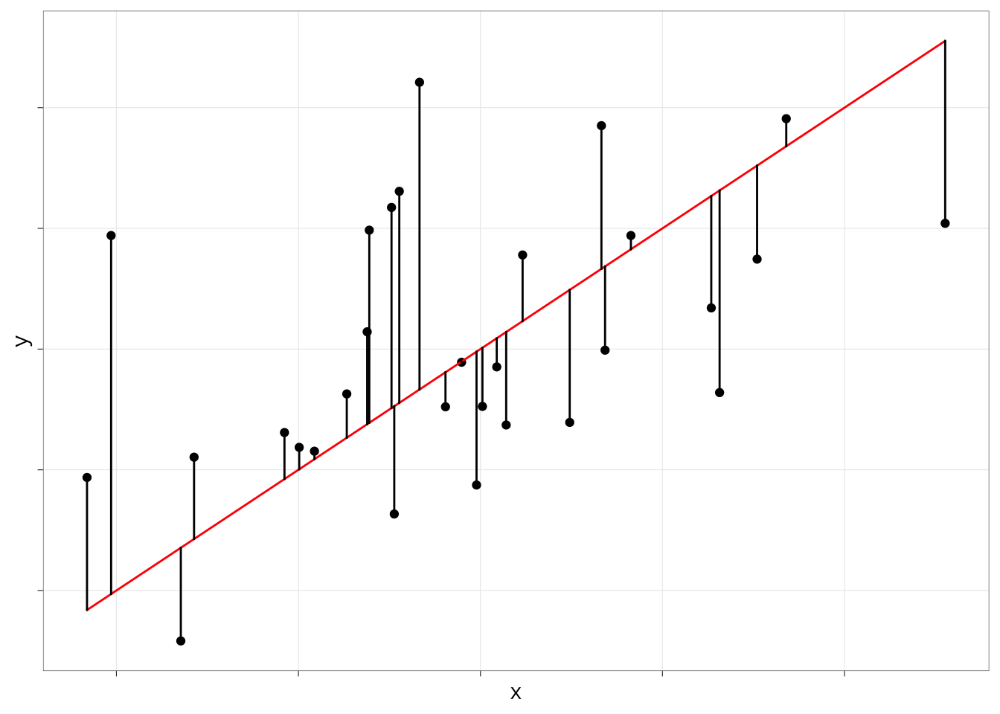
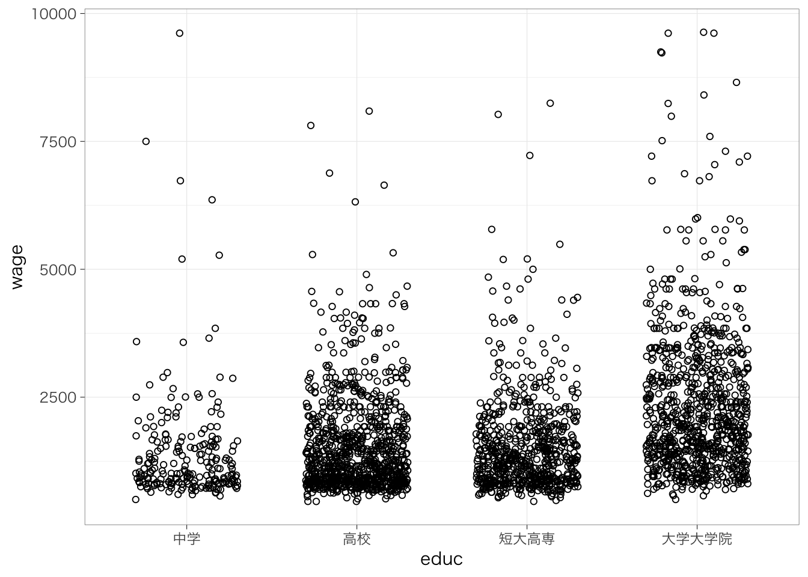

Chapter 5 1変数の集計
本章では、1変数の集計方法を説明する。
内容に入る前に、右上のプロジェクトのボックスの横が、前章で作成したプロジェクトの名前（たとえば、seminar_sociology_r）になっているかどうかを確認しておこう。なっていない場合は、右上のボックスをクリックして、「Open Project…」を選択し、前章で作成したRprojファイル（たとえば、seminar_sociology_r.Rprojといったような名前になっている）を選んで、プロジェクトを切り替えよう。
さらに、以下のパッケージを読み込んだ上で、第4章で作成したデータを読み込んでpiaacというデータフレームに入れていることを前提とする。具体的には、以下のコードを実行しておく必要がある。
5.1 連続変数を集計する
5.1.1 要約統計量の計算
さまざまな変数を集計するときに最も基本的なコードが、summarize()である。たとえば、piaacというデータフレームに含まれている変数wageの平均値を求めたいとする。このようなときには、次のように記述する。
## # A tibble: 1 × 1
## mean
## <dbl>
## 1 1792.この命令は、「piaacというデータフレームのなかに入っている変数を集計してね、具体的には、平均値を求めてね、ちなみにその平均値にはmeanという名前をつけてね」ということを意味している。
集計する変数（この場合はwage）にNAが含まれていると計算ができず、結果もNAとなってしまう。NAが含まれる変数の平均値を計算するときには、あらかじめwageがNAの行を除外しておくとよい。詳しくは前章のサンプルの選択を参照のこと。一時的にNAの行を除外して集計してみたい場合には、次のように書く。
## # A tibble: 1 × 1
## mean
## <dbl>
## 1 1792.平均値だけでなく、いろいろな統計量を計算できる。よく用いるものは以下のとおり。
| 関数 | 意味 |
|---|---|
mean(x) |
平均値 |
var(x) |
分散1 |
sd(x) |
標準偏差 |
max(x) |
最大値 |
min(x) |
最小値 |
quantile(x, 0.5) |
分位数。0.5とした場合には50パーセンタイル点（中央値）を計算する。0（最小）から1（最大）まで任意の点を指定できる。 |
n() |
行数を数える。 |
全部集計してみるとたとえば以下のようになる。
piaac %>%
summarize(mean = mean(wage),
sd = sd(wage),
max = max(wage),
min = min(wage),
p25 = quantile(wage, 0.25),
p50 = quantile(wage, 0.5),
p75 = quantile(wage, 0.75),
n = n())## # A tibble: 1 × 8
## mean sd max min p25 p50 p75 n
## <dbl> <dbl> <dbl> <dbl> <dbl> <dbl> <dbl> <int>
## 1 1792. 1191. 9634. 462. 950 1445. 2212. 2728いくつかの変数について最小値、第1四分位点、中央値、平均値、第3四分位点、最大値をまとめて表示したい場合、これらを一つひとつやっていくのはとても煩雑である。このような場合には、統計量を計算したい変数だけをselect()で抽出し、そのうえで、summary()関数を使うとできる。たとえば、wage, age, healthの3つの変数についての統計量をまとめて見てみたい場合に次のようにする。
## wage age health
## Min. : 461.5 Min. :25.00 Min. :1.000
## 1st Qu.: 950.0 1st Qu.:35.00 1st Qu.:2.000
## Median :1445.1 Median :43.00 Median :3.000
## Mean :1792.4 Mean :43.85 Mean :3.046
## 3rd Qu.:2212.2 3rd Qu.:53.00 3rd Qu.:4.000
## Max. :9633.9 Max. :64.00 Max. :5.0005.2 分布をみる
5.2.1 ヒストグラムとggplotの導入
連続変数の場合にはたんに平均値や中央値だけを見るだけでなく、分布を見ることも重要である。連続変数の分布をみるときには、ヒストグラムを使うのが有効である。コードの説明はさておき、まずはヒストグラムをみてみよう。
## `stat_bin()` using `bins = 30`. Pick better value with `binwidth`.
このように、Rでグラフを作成したいときに活躍するのがggplot2である。ggplot2はtidyverseパッケージを読み込むと合わせて読み込まれるため、別途library(ggplot2)で読み込む必要はない。
ggplot2の基本的な発想は、キャンバスに絵の具を重ね塗りしていくかのように、一つひとつ層を重ねていってグラフを作るというものである。具体的にみてみよう。先ほどのコードから3行目を削除した次の結果を確認してみよう。
ggplot()という部分が、グラフを書くための準備をしている箇所である。aes()のなかでは、x軸やy軸にそれぞれ何の変数を取るのかであったり、どのような色で分けるのか（後述）などを指定する。今の場合であれば、x軸にwageをとる、ということを指している。上記の命令だけだと、このようにx軸のみが表示された空白の座標が準備される。
geom_histogram()というのが、ヒストグラムを書くためのコードである。先ほどのコードに、+でつないでgeom_histogram()というコードを追加すると、空白の座標にヒストグラムが描かれる。縦軸（count）は、その区間に何人の人が属しているかを示している。
## `stat_bin()` using `bins = 30`. Pick better value with `binwidth`.
geom_histogram()内でオプションを指定することで、ヒストグラムの見た目をさまざまに変更できる。たとえば、区間の区切りの個数（bins）を細かくしてみよう（デフォルトはbins = 30）。

以下、+でつないでいくことで、さらに層を重ねて、グラフの見た目をさまざまに変更できる。たとえば、x軸の範囲を指定するxlim()を使って、より見やすいグラフを作ってみよう。
piaac %>%
ggplot(aes(x = wage)) +
geom_histogram(bins = 100) +
xlim(0, 10000) # x軸の最小値を0、最大値を10000に設定## Warning: Removed 2 rows containing missing values or values outside the scale range
## (`geom_bar()`).
なお、y軸の範囲を指定する場合には、ylim()を用いる。範囲を外れる値およびNAについては表示されず、代わりに、いくつの値が表示されていないのかを示す警告メッセージが表示される（Warning message:と表示される）。このメッセージはとくにエラーというわけではないが、意図せずにたくさんの値が非表示になっていないかどうかを確認しておくとよい。
5.2.2 ggplotの設定（日本語関係）
ところで、Macでggplot2パッケージを使用し、グラフ中に日本語を使用する場合には、library(tidyverse)（またはlibrary(ggplot2)）を実行したうえで、たとえば以下のようなコードをあらかじめ実行しておく必要がある。
theme_set()関数はフォントのほかにいくつかの追加的な設定を行うことができる。この資料で使用しているグラフについては以下のようにthemeを設定している。
theme_set(theme_bw(
base_family = "HiraginoSans-W3",
base_size = 11, #文字の大きさを設定。デフォルトは11
base_line_size = 0.2, #罫線の線の太さを設定。デフォルトはbase_size/22
base_rect_size = 0.2 #外枠の線の太さを設定。デフォルトはbase_size/22
))Windowsユーザの方は上記コードからbase_family =の行を除いたこちらのコードを用いる。
5.2.3 軸に名前をつける
上記の設定を終えて日本語問題をクリアしていれば（Windowsユーザならはじめからクリアしているのだけれども）、軸に名前をつけるコマンドlabs()をさらに追加して、日本語の名前を付けてよりわかりやすいグラフを作ることができる。
piaac %>%
ggplot(aes(x = wage)) +
geom_histogram(bins = 100) +
xlim(0, 10000) +
labs(x = "賃金", y = "度数")## Warning: Removed 2 rows containing missing values or values outside the scale range
## (`geom_bar()`).
5.3 カテゴリ変数を集計する
5.3.1 度数の確認
カテゴリ変数の場合は平均値や標準偏差のような要約統計量を計算することはできない（意味がない）。最も基本的な集計は、各カテゴリにそれぞれ何人いるのかを確認することである。count()を使うことで各カテゴリの人数（度数）をみることができる。
## # A tibble: 9 × 2
## occupation n
## <fct> <int>
## 1 管理職 219
## 2 専門職 419
## 3 技術職・准専門職 439
## 4 事務補助 439
## 5 サービス・販売 576
## 6 農林漁業 25
## 7 技能工 265
## 8 設備・機械運転・組立 207
## 9 単純作業 139度数だけでなく、各職業にどれくらいの割合の人が含まれているのかも重要である。先ほどのコードに少し計算をすることで、各カテゴリに含まれる人が全体に占める割合を計算できる。
piaac %>%
count(occupation) %>%
mutate(sumn = sum(n)) %>% # すべての度数を合計した値を入れた列を作成する
mutate(prop = n / sumn) # 各職業の度数を合計で割った値を求める## # A tibble: 9 × 4
## occupation n sumn prop
## <fct> <int> <int> <dbl>
## 1 管理職 219 2728 0.0803
## 2 専門職 419 2728 0.154
## 3 技術職・准専門職 439 2728 0.161
## 4 事務補助 439 2728 0.161
## 5 サービス・販売 576 2728 0.211
## 6 農林漁業 25 2728 0.00916
## 7 技能工 265 2728 0.0971
## 8 設備・機械運転・組立 207 2728 0.0759
## 9 単純作業 139 2728 0.0510propの列が、各職業の度数を合計で割った値を示している。この値はすべて足すと1になる。この値を100倍すれば、百分率（%）としてよむことができる。
5.3.2 分布の可視化：棒グラフ
こうして集計した値を棒グラフにしすると見やすいかもしれない。このようなときにはどうすればよいだろうか？先ほど、count()を使って集計した結果をデータフレームに保管しよう。
countdata <- piaac %>%
count(occupation) %>%
mutate(sumn = sum(n)) %>% # すべての度数を合計した値を入れた列を作成する
mutate(prop = n / sumn) # 各職業の度数を合計で割った値を求めるこのデータフレームを使って、ggplot()を使って棒グラフを作成する。棒グラフを作るときのコマンドは、geom_col()である。
countdata %>%
ggplot(aes(x = occupation, y = n)) + # x軸をoccupation, y軸を人数（n）として指定
geom_col() # 棒グラフを作成悪くないけれど、横軸のラベルがかぶってしまって、何を指しているのかいまいちわからなくなってしまっている。また、このままだと縦軸や横軸の名前は必ずしもわかりやすいものではない。そこで、theme(axis.text.x = element_text(angle = 90, hjust = 1, vjust = 0.5))を追加しよう。これはそれぞれ次のようなことを意味する。
- axis.text.x：x軸の値ラベルに関する設定を行う。
- angle = 90：x軸の値ラベルを90度傾ける。数字を45とすれば、45度傾けることができる。
- hjust = 1：x軸の値ラベルの水平方向の位置を調整する。0は左寄せ、0.5は中央寄せ、1は右寄せ。90度に傾ける場合には、右寄せがわかりやすい。
- vjust = 0.5：x軸の値ラベルの垂直方向の位置を調整する。0は下寄せ、0.5は中央寄せ、1は上寄せ。90度に傾ける場合には、0.5で中央寄せにするのがわかりやすい。
countdata %>%
ggplot(aes(x = occupation, y = n)) +
geom_col() +
theme(axis.text.x = element_text(angle = 90, hjust = 1, vjust = 0.5)) +
labs(x = "職業", y = "割合") # x軸とy軸に名前をつける
縦軸を人数ではなく割合にした場合のグラフは次のようになる。
countdata %>%
ggplot(aes(x = occupation, y = prop)) + # 縦軸を割合に
geom_col() +
theme(axis.text.x = element_text(angle = 90, hjust = 1, vjust = 0.5)) +
labs(x = "職業", y = "割合") 
5.4 記述統計量の一覧表を作る
5.4.1 記述統計量の一覧表
論文などで分析に使用する変数の記述統計量の一覧表を示していることがよくある。このような表を作ることで、読む側にとっては変数の分布を確認でき、その後の結果も読みやすくなる。こうした一覧表を作るために非常に便利なパッケージがgtsummaryである。まずはこれを読み込もう。
次の5つの変数の記述統計量の一覧表を作りたいとしよう。select()を使って、こららの変数だけを残したデータフレームを作成する。
| 列名 | 型 | 変数ラベル |
|---|---|---|
| gender | カテゴリ（factor） | 性別 |
| age | 連続（numeric） | 年齢 |
| educ | カテゴリ（factor） | 最終学歴 |
| occupation | カテゴリ（factor） | 職業 |
| wage | 連続（numeric） | 賃金 |
この中には連続変数もカテゴリ変数もあり、またカテゴリの個数が2つのものもあればもっと多いものもあって複雑である。gtsummary::tbl_summary()は、変数の型がきちんとしていれば、それを読み取ってきれいな記述統計量の表を作ってくれる。
| Characteristic | N = 2,7281 |
|---|---|
| gender | |
| 女性 | 1,284 (47%) |
| 男性 | 1,444 (53%) |
| age | 43 (35, 53) |
| educ | |
| 中学 | 226 (8.3%) |
| 高校 | 948 (35%) |
| 短大高専 | 681 (25%) |
| 大学大学院 | 873 (32%) |
| occupation | |
| 管理職 | 219 (8.0%) |
| 専門職 | 419 (15%) |
| 技術職・准専門職 | 439 (16%) |
| 事務補助 | 439 (16%) |
| サービス・販売 | 576 (21%) |
| 農林漁業 | 25 (0.9%) |
| 技能工 | 265 (9.7%) |
| 設備・機械運転・組立 | 207 (7.6%) |
| 単純作業 | 139 (5.1%) |
| wage | 1,445 (950, 2,213) |
| 1 n (%); Median (Q1, Q3) | |
これでもすでにかなりきれいな表になっているが、以下の4点で修正をしてみよう。
- educやoccupationといった変数がそれぞれ何を示しているのか、自分以外の見る人にとってもわかるように日本語の名前をつけたい：
label = list(x ~ "名前") - 連続変数については中央値（50パーセンタイル点）、第1四分位数（25パーセンタイル点）、第3四分位数（75パーセンタイル点）が示されているが、それよりは、平均値と標準偏差を載せたい：
statistic = list(all_continuous() ~ "{mean} ({sd})") - 同じく、連続変数については、小数点以下の桁数（小数点第1位に）揃えたい：
digits = all_continuous() ~ 1 - 左上のCharacteristicsというのがなんだか気になるので削除したい：
tbl_crossのコマンドの後ろに%>%でつないでmodify_header(label ~ "")
piaac_selected %>%
tbl_summary(label = list(gender ~ "性別",
age ~ "年齢",
educ ~ "最終学歴",
occupation ~ "職業",
wage ~ "賃金"), #~の前には列名、後ろにはつけたい名前を""で囲んで入れ、,で一つずつ区切る
statistic = list(all_continuous() ~ "{mean} ({sd})"),
digits = all_continuous() ~ 1) %>% #数値の部分が小数点第y位の部分の値
modify_header(label ~ "") # ""の部分には好きな文字列を入れられる。何も入れなければ空欄になる| N = 2,7281 | |
|---|---|
| 性別 | |
| 女性 | 1,284 (47%) |
| 男性 | 1,444 (53%) |
| 年齢 | 43.8 (10.8) |
| 最終学歴 | |
| 中学 | 226 (8.3%) |
| 高校 | 948 (35%) |
| 短大高専 | 681 (25%) |
| 大学大学院 | 873 (32%) |
| 職業 | |
| 管理職 | 219 (8.0%) |
| 専門職 | 419 (15%) |
| 技術職・准専門職 | 439 (16%) |
| 事務補助 | 439 (16%) |
| サービス・販売 | 576 (21%) |
| 農林漁業 | 25 (0.9%) |
| 技能工 | 265 (9.7%) |
| 設備・機械運転・組立 | 207 (7.6%) |
| 単純作業 | 139 (5.1%) |
| 賃金 | 1,792.4 (1,191.0) |
| 1 n (%); Mean (SD) | |
5.4.2 グループ別の記述統計量の一覧表
何らかの属性などでサンプルを分けて比較分析する場合には、属性ごとの記述統計量を示すとよい。これも、tbl_summary()のなかでby =というオプションを指定することで簡単に実行することができる。たとえば性別（gender）で分ける場合には、次のようにする。
piaac_selected %>%
tbl_summary(label = list(age ~ "年齢",
educ ~ "最終学歴",
occupation ~ "職業",
wage ~ "賃金"), #~の前には列名、後ろにはつけたい名前を""で囲んで入れ、,で一つずつ区切る
by = gender, # 性別（gender）で分割
statistic = list(all_continuous() ~ "{mean} ({sd})"),
digits = all_continuous() ~ 1) %>%
modify_header(label ~ "") | 女性 N = 1,2841 |
男性 N = 1,4441 |
|
|---|---|---|
| 年齢 | 44.0 (10.7) | 43.7 (11.0) |
| 最終学歴 | ||
| 中学 | 94 (7.3%) | 132 (9.1%) |
| 高校 | 466 (36%) | 482 (33%) |
| 短大高専 | 466 (36%) | 215 (15%) |
| 大学大学院 | 258 (20%) | 615 (43%) |
| 職業 | ||
| 管理職 | 17 (1.3%) | 202 (14%) |
| 専門職 | 206 (16%) | 213 (15%) |
| 技術職・准専門職 | 143 (11%) | 296 (20%) |
| 事務補助 | 324 (25%) | 115 (8.0%) |
| サービス・販売 | 397 (31%) | 179 (12%) |
| 農林漁業 | 7 (0.5%) | 18 (1.2%) |
| 技能工 | 62 (4.8%) | 203 (14%) |
| 設備・機械運転・組立 | 33 (2.6%) | 174 (12%) |
| 単純作業 | 95 (7.4%) | 44 (3.0%) |
| 賃金 | 1,339.1 (781.6) | 2,195.5 (1,338.7) |
| 1 Mean (SD); n (%) | ||
5.5 結果をファイルに書き出す
5.5.1 結果を入れるためのフォルダを作る
上記ではいろいろなグラフを作ったり、要約統計量を計算するためのコマンドを紹介してきた。RStudio上で見る分にはこれで十分だが、実際にこれらを論文にまとめていく段階では、結果をwordに貼り付けたりする必要がある。ここではそうした方法を紹介する。
3章で、データを置くためのフォルダを作成しておくとよいということを紹介した。分析結果を保存しておくためのフォルダというのも別途あると整理整頓ができて便利である。ここでは、「results」という分析結果を保存しておくためのフォルダを作ろう。右クリックで「新規フォルダを作成」するか、以下のコードを実行する。
5.5.2 ggplotで作成した図を書き出す
ggplotで作成した図を保存する方法は以下のとおりである。日本語フォントを含んでいるかどうか、および、出力形式によってどのようなコマンドを実行するかが変わってくるので、注意が必要。
5.5.2.1 日本語フォントを含まない図の場合
日本語フォントを含まない（あらかじめtheme_set()で設定していない）場合についてみてみよう。例として、先ほど出したヒストグラムを再度表示する。
## `stat_bin()` using `bins = 30`. Pick better value with `binwidth`.## Warning: Removed 2 rows containing missing values or values outside the scale range
## (`geom_bar()`).
図を保存するときの形式として、pdfファイルとpngファイルについて説明する。
pdfはベクター形式といわれていて、拡大しても画質が荒くならない。どんなに大きくしたり小さくしたりしてもつねにきれいなグラフが保持されるというメリットがあるが、Wordファイルに貼り付けられなかったりすることもある（たしかWindowsだとWordにpdfを貼り付けられない気がする？）。
pngはラスタ形式といわれていて、（写真みたいに）拡大すると画質が荒くなってしまう。ただ、よっぽど拡大しない限りはそれなりにきれいな図にすることができるので、これでも事足りる場面は多い。この方法は、WindowsでもMacでも実行できるはず。
書き出したい図が右下のplotのウィンドウに表示された状態で、以下のggsave()コマンドを使うと、保存することができる。
## Saving 7 x 5 in image
## `stat_bin()` using `bins = 30`. Pick better value with `binwidth`.## Warning: Removed 2 rows containing missing values or values outside the scale range
## (`geom_bar()`).## Saving 7 x 5 in image
## `stat_bin()` using `bins = 30`. Pick better value with `binwidth`.## Warning: Removed 2 rows containing missing values or values outside the scale range
## (`geom_bar()`).サイズをとくに指定しない場合には、plotの画面に表示されている縮尺で結果が保存される。これだと、表示している窓の大きさを変えるたびに出力結果が変わってしまうので、次のように幅と高さを指定するとよい。
## `stat_bin()` using `bins = 30`. Pick better value with `binwidth`.## Warning: Removed 2 rows containing missing values or values outside the scale range
## (`geom_bar()`).なお、widthやheightの数値が小さいほど、図内の文字や棒グラフの棒、散布図の点は相対的に大きくなる。より複雑な図で、文字などの被りがないようにするためには、適宜、サイズの変更が必要である。
5.5.2.2 日本語フォントを含む図の場合
日本語フォントを含む図の場合には、上記の方法で保存すると文字が消えてしまうという問題が生じる。この場合は、以下の手順で図を保存する。
まず、次のように日本語フォントを含む図を作成してみよう。
piaac %>%
with(table(occupation)) %>%
prop.table() %>%
as.data.frame() %>%
ggplot(aes(x = occupation, y = Freq)) +
geom_col() +
theme(axis.text.x = element_text(angle = 90, hjust = 1, vjust = 0.5)) + # X軸を45度傾ける
labs(x = "職業", y = "割合") # x軸とy軸に名前をつける
png形式の場合は今までと同じ方法で文字化けせずに保存できる。
一方で、pdfの場合にはひとくふう必要となる。まず、保存したいグラフをオブジェクト（ここではgとする）に入れてやる。
g <- piaac %>%
with(table(occupation)) %>%
prop.table() %>%
as.data.frame() %>%
ggplot(aes(x = occupation, y = Freq)) +
geom_col() +
theme(axis.text.x = element_text(angle = 90, hjust = 1, vjust = 0.5)) +
labs(x = "職業", y = "割合") # x軸とy軸に名前をつけるそのうえで、Windowsの場合は以下のコマンド：
Macの場合は以下のコマンドで保存する：
quartz(file = "results/bar_graph.pdf", type = "pdf", family = "sans", width = 5, height = 4)
g
dev.off() ## quartz_off_screen
## 2これで無事、グラフが保存できた。
5.6 tbl_summary()で値の少ない連続変数がカテゴリ変数として集計される問題について
この節では、gtsummary::tbl_summary()を使っていて起こりがちな問題への対処法について記す。
今回のデータには、1, 2, 3, 4, 5のいずれかの値をとり、値が大きいほど健康状態がよいことを示す変数healthが含まれている。この変数の記述統計量tbl_summary()で表示すると、連続変数（numeric）のはずなのになぜかカテゴリ変数のように表記されてしまう。
## health
## 1 2 3 4 5
## 122 572 1274 579 181| Characteristic | N = 2,7281 |
|---|---|
| gender | |
| 女性 | 1,284 (47%) |
| 男性 | 1,444 (53%) |
| age | 44 (11) |
| wage | 1,792 (1,191) |
| health | |
| 1 | 122 (4.5%) |
| 2 | 572 (21%) |
| 3 | 1,274 (47%) |
| 4 | 579 (21%) |
| 5 | 181 (6.6%) |
| 1 n (%); Mean (SD) | |
どうやらgtsummary::tbl_summary()はカテゴリ変数の値の種類が少ないと、連続変数ではなくカテゴリ変数のように集計するというありがた迷惑（？）な機能があるようである。ここでオプションとしてtype = list()で連続変数であることを記載することで、この親切を抑制することができる。
piaac_selected2 %>%
tbl_summary(statistic = list(all_continuous() ~ "{mean} ({sd})"),
type = list(health ~ "continuous")
) # health変数を連続変数として表示| Characteristic | N = 2,7281 |
|---|---|
| gender | |
| 女性 | 1,284 (47%) |
| 男性 | 1,444 (53%) |
| age | 44 (11) |
| wage | 1,792 (1,191) |
| health | 3.05 (0.93) |
| 1 n (%); Mean (SD) | |
なお、複数の変数を連続変数として表示 する場合には、次のように書く。
分散には2つの種類がある。一つは標本分散と呼ばれるものであり、\(\sum_i(x_i - \overline{x})^2/n\)と定義される。もう一つは不偏分散と呼ばれるものであり、\(\sum_i(x_i - \overline{x})^2/(n-1)\)と定義される。Rの
var()関数は不偏分散を計算するため、標本の集計値として標本分散を求めたい場合には、\((n-1)/n\)をかけなければいけない。同様に標準偏差にも標本標準偏差と不偏標準偏差があり、それぞれ\(\sqrt{\sum_i(x_i - \overline{x})^2/n}\)と\(\sqrt{\sum_i(x_i - \overline{x})^2/(n-1)}\)と定義される。Rのsd()関数は不偏標準偏差を計算しているため、標本の集計値として標本標準偏差を求めたい場合には、先の方法で求めた標本標準偏差 の平方根をとる。サンプルサイズが大きければ両者はほとんど同じ値になるためさほど気にする必要はないが、論文に記述統計量を記載する場合には、標本標準偏差を載せるほうが望ましい。なお、あとで紹介するgtsummary::tbl_summary()関数を使う場合には、標本標準偏差が計算される。↩︎